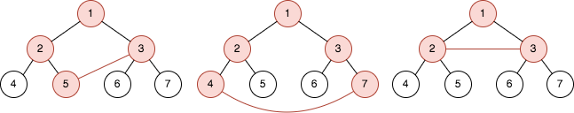
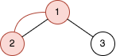

| Category | Difficulty | Likes | Dislikes |
|---|---|---|---|
| Algorithms | Hard | 384 | 31 |
array | tree | binary-tree
arcesium
You are given an integer n. There is a complete binary tree with 2n - 1 nodes. The root of that tree is the node with the value 1, and every node with a value val in the range [1, 2n - 1 - 1] has two children where:
2 * val, and2 * val + 1.You are also given a 2D integer array queries of length m, where queries[i] = [ai, bi]. For each query, solve the following problem:
ai and bi.ai and bi.Note that:
Return an array answer of length m where answer[i] is the answer to the ith query.
Example 1:

Input: n = 3, queries = [[5,3],[4,7],[2,3]]
Output: [4,5,3]
Explanation: The diagrams above show the tree of 23 - 1 nodes. Nodes colored in red describe the nodes in the cycle after adding the edge.
- After adding the edge between nodes 3 and 5, the graph contains a cycle of nodes [5,2,1,3]. Thus answer to the first query is 4. We delete the added edge and process the next query.
- After adding the edge between nodes 4 and 7, the graph contains a cycle of nodes [4,2,1,3,7]. Thus answer to the second query is 5. We delete the added edge and process the next query.
- After adding the edge between nodes 2 and 3, the graph contains a cycle of nodes [2,1,3]. Thus answer to the third query is 3. We delete the added edge.Example 2:

Input: n = 2, queries = [[1,2]]
Output: [2]
Explanation: The diagram above shows the tree of 22 - 1 nodes. Nodes colored in red describe the nodes in the cycle after adding the edge.
- After adding the edge between nodes 1 and 2, the graph contains a cycle of nodes [2,1]. Thus answer for the first query is 2. We delete the added edge.
Constraints:
2 <= n <= 30m == queries.length1 <= m <= 105queries[i].length == 21 <= ai, bi <= 2n - 1ai != bi